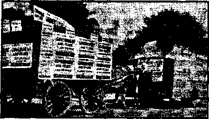
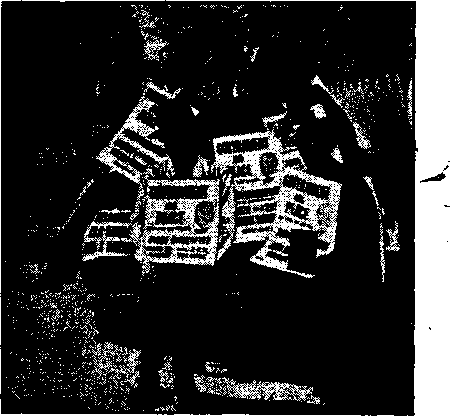
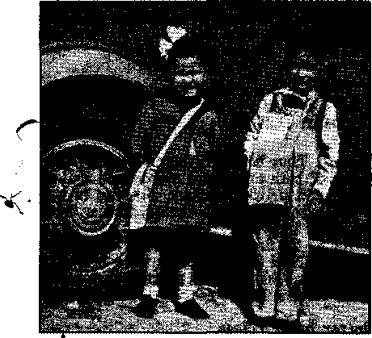
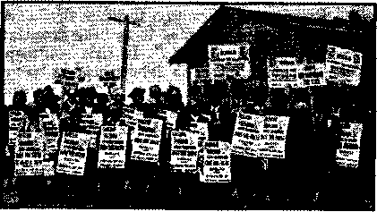
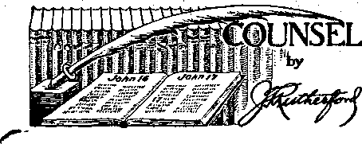

Contents
Pim XII’s and Stalins Comrade (Part 1)
Catholics Must Exterminate One Another
The New Government
Hitler’s Decisions Made in Trances
Counsel by J. F. Rutherford
Under the Totalitarian Flag
Protestantism Perishing in Germany
Treasury, CCC and Postal Administrations '
The Cost of Justice in Old New York '
Humankind
British Comment
FublUhM every other Wednesday by WATCHTOWER BIBLE AND TRACT SOCIETY, INC. - 117 Adams St., Brooklyn, N. Y., U. S. A.
, Editor Clayton J. Woodworth
Business Manager ' Nathan H. Knorr
Five Cents a Copy
SI-a year In the United States
11.25 to Canada and *11 other countries
NOTICE TO SUBSCRIBERS
Remittances: For your own safety, remit by postal er express money order. When coin or currency Is lost in the ordinary malls, there Is no redress. Remittances from countries other than those nemea below may be made to the Brooklyn office, hut only by International postal money order.
Receipt of a new or renewal subscription win ho acknowledged only when requested; Notice of Expiration Is seift with the journal one month before subscription . expires. Please renew promptly tp avoid loss of copies. Send change of address direct to us rather than to the post office. Tour request should teach us st least two weeks before the dets of issue with which It Is to take effect. Send your old as well as the new address. Copies wttl not be forwarded by the post office to your Sew address unless extra, postage Is provided by you. Published also tn Afrikaans, Bohemian, Danish, Dutch, Finnish, French, German, Greek, Hungarian, Japanese, Norwegian. Polish, Portuguese, Spanish, Swedish, Ukrainian; also special Australian edition in English.
OFFICES FOR OTHER COUNTRIES
-England 34 Craven Terrace, Dontton. W. 3
Canada 40 Irwin Avenue, Toronto 5, Ontario 'Australia 7 Beresford Road, Strathneld, N.S.W.
South Africa 923 Boston House, Cape Town
-Entered as second-class matter at Brooklyn, N. Y., under the Act of March 8, 1878.
O.K.!
WggaBI A gentleman had completed his purchases, and the clerk, in filling bJEsh the sa^es slip, asked: eWvCX natne> Please!”
"Jepson,” replied our hero. jjf “Chipson?”
“Na, Jepson. Sixteen twenty-one West—” “Your first initial, please.”
“Oh, K.” *
“0. K. Jepson.”
“Excuse me, it isn’t O. K. You didn’t understand; I said, ‘Oh.’ ”
“0. Jepson.”
“No. Rub out the O and let the K stand.”
The clerk began to look haggard.
“Will you please give me your initials again f”
“I said ‘K’.”
“Pardon, you said fO. K’.”
"I said 'Oh1—”
“Just now you said ‘K’
“Allow me to finish. I said ‘Oh’ because
I didn’t understand what youwere asking me.
I didn’t mean it Was my initial. My name is
Kirby Jepson.”
“Oh.”
"No. Not 0, but K. Here, give me the pencil, and FU write it myself. There, I guess it’s 0. K. now,’’—Labor.
UnnBceturily Excited
A customer was being shaved, shampooed, massaged, manicured,-shined. Inthe midst of ft a man rmkhed into the barber shop, grabbed the customer by a fat shoulder,-yeHM into a lathered ear: "Hey, Scarlotti, your house is qn fire.” ’ ’ < ; ■
Half shaved, half shampooed, half massaged, half manicured, half shined, the customer leaped from his chair, dashed out the door, down the street at a full gallop, then suddenly stopped dead and muttered: “What am I running for? I’m not Scarlotti!”
Th* inefficient Clerk
Shopwalker: “Book here, I heard you say to that customer, Wo, we haven’t had any for a long time!’ You, should never say anything like that; always say, ‘We will get it for you.’ What was it the lady wanted ?”
Salesman: “Sunshine.”
“And in His name shall the nations hope?’—Matthew 12:21, A.R.V.
. Volume XXI
Brooklyn, N, Y«, Wednesday, May 15, 1940
Number 539
[In 1914 Satan’s offspring, to wit, ‘the beast that came up out of the sea,* got Into a fight, Its heads fighting each other. Germany the head on one side and Britain the head on the other side led the fight. Every nation Involved In that war was and Is a part of Satan’s organization. That world war resulted In a terrible punishment to Germany and her allies, and it appeared for some time that Germany was completely done for. This harmonizes with John's statement: “And I saw one of his [Satan’s beastly government’s] heads, as It were wounded to death.” The John or servant class of the Lord for some time thought that it was literally true that Germany would be destroyed. To many it seemed Impossible for Germany ever to recover. Then John says In the same connection: “And his deadly wound was healed: and all the world wondered after the beast.”—Revelation 13: 3. (See Judge Rutherford’s book “Light”, Book One, page 273.) For supplementary evidence that Hitler Is under control of demons, see page 16.]
Stalin’s bosom friend, Adolf Hitler, continues to show his Jesuit training, and the bishops of the Roman Catholic Hierarchy in the lands under his control have issued orders that all their subjects must be obedient to the fuehrer even unto death. The Devil’s objective in this is to stop the message of Jehovah’s Theocratic Kingdom.
May 1, 1939, the non-aggression treaty between Germany and Denmark was signed, .agreeing that, for ten years thereafter, under no circumstances would either government resort to war or any form of violence against the other. At five o’clock on the morning of April 9, 1940, every important city in Denmark and in Norway was occupied by German troops.
Perhaps you have wondered how German troops could be thus landed in ports that string out a thousand miles from German shores and all be landed at the same time. The answer is simple: The eastern shores of Denmark'and the western shore of Norway constitute a naturally protected corridor
-je . Notmai exaltation of Roman Catholic Hierarchy at reception of diplomatic corps. The mighty dictator, Hitler, stands at attention before his master’s representative.
MAY 15, 1940 3
through which in peace and in war has moved the commerce of all the Baltic states, includ-- ing Germany. Down this corridor every winter, including last winter, millions of tons of iron ore from Sweden have come to Germany from the iron-ore port at Narvik at the north of Norway. Each year Germany uses ten million tons of the high-grade Swedish ore to smelt along with their own domestic production of a like amount and another like amount brought in from other ore deposits elsewhere.
For months, quite probably for years, the Germans have been planning the absorption of Scandinavia (Sweden is surrounded and as good as gone). They merely filled their empty ore boats with troops and war supplies and, at the hour agreed upon, these troops issued from the holds and seized the ports to which they had been assigned. Denmark yielded without a struggle.
There arc now Nazi enthusiasts in every land who, like “Father”, Coughlin and the “Christian Front”, accept ein Kampf as the sure guide to the destruction of democratic governments and are anxious to do in their own lands what the Jesuit-trained Hitler did in. Germany. Coughlin is so charmed with the propaganda of Goebbels, also Jesuit-trained, that he has copied much of his stuff verbatim.
In the overrunning of the four Protestant countries that go to make up Scandinavia Hitler has had the best advice and assistance that the Jesuits could offer, and the Jesuits have behind them fifteen hundred years of the most skillful and stupendous liars that have existed on earth since Lucifer, the first religionist, lied to mother Eve.
For sever a! weeks before the German invasion of Norway, Reieh agents, officers*and officials filtered into the country in the arise of salesmen and tourists. On the Friday n^ht before the invasion, at the German legation in Oslo, 200 carefully selected guests were shown a film, “Baptism of Fire,” disclosing in detail the manner in which Poland was seized at the first of September last.
When the German troops entered Oslo, faithless Norwegian officers rode in the same automobiles with the German officers when they made their official entry. The port of Narvik was turned over to the Germans as a gift by Colonel Sundlo, its military commander and an ardent Norwegian Nazi. The commander of Bergen turned over his city without resistance. The same was true of the commander of Kongsvinger fortress, northeast of Oslo,. near the Swedish border, and which fortress ' ■■■ is a key to the Norwegian defenses in that vicinity.
As usual in modern invasions, a puppet regime was set up. The puppet in this case i-being Vidkun Quisling, who, so it happens, was the defense minister of Norway the year that Hitler came into power. The Nazi party is so unpopular in Norway that not one of its candidates was elected to parliament in the last election.
King . Haakon showed considerable manliness. He refused to negotiate with the German minister at- Oslo, and-after he left the city [so British reports say but German reports deny] German bombers followed him from place to place, bombing hotels and villages where he stopped, evidently trying to kill him. In his efforts to escape from the Germans and reestablish his government somewhere, he did not have his shoes off for at least the first five nights. ■
The Germans claim that during those five < days they landed 100,000 troops in Norway. ? Swedish sources claim that German planes ”* were carrying troops into Norway at- the rate of 4,000 a day. Britain claims to have landed 50,000 troops on April 15.
The first stand of the Norwegians was by peasants who learned that 600 heavily armed Germans were coming by bus to capture the fleeing Norwegian king and the. parliament. These peasants seized private cars, overturned them in the road, and behind this barricade opened fire with machine-guns and rifles. At the end of that time there were said to be only about 900 Norwegians fighting anywhere. The German general in charge of the invasion ' broadcast a warning that he would impose the death penalty on every Norwegian who resists the invasion or who obeys the orders of the Norwegian government. '
The British mined the entire south shore of the Baltic sea from the Kiel canal to Lithu- T ania. They broadcast advice to the Norwegians to collect information regarding the invaders, f’’" to cut telephone lines, block roads, destroy ‘ bridges and railways, and. collect and remove all means of transport. British, French and Polish diplomats left Denmark, and the United States advised all Americans to also leave via Mediterranean boats.
All Danish ships must hereafter sail under British or French flags, and all Norwegian ships now become ■ ships of the allies;
and, as the Norwegians have the third—' largest merchant fleet in the world, this is a great advantage to the allies. The Faroe Islands, Iceland, and probably" Greenland, are under British protection. I c el a n d declared its independence.
Norway Norway is one of the most progressive countries in the world. It has no illiterates, no slums, no military statues, and ‘ nobody is left sick or destitute. Sixteen hundred skilled, Government-trained midwives give close at
The three, graces—1039-1940 style
tention to the arrival of new Norwegians. One Norway hospital, municipally owned, with three thousand beds, gives services for the equivalent of fifty cents a day, which includes all surgical and medical attention. Scandinavia has the highest standard of living in flic world, and Norway is unique in that it has a surplus in the budget.
Norway has had State workman’s insurance for 43 years. She has owned all her own railways for forty-seven years. Over the State-owned telephone lines a fifteen-minute conversation for a distance of 430 miles costs 12 cents. The interest on farm mortgages is two percent in the State banks. State-owned ■'V electric plants light the country from end to ' end, including the highways. Norway has had State fire, theft, tornado and marine insurance for forty years, and unemployment insurance "(j. for twelve years, and has virtually no crime.
On account of the terrific snows there are places in Norway where the cattle have to be kept in the barns up to the middle of June. The mountains are so steep that in some places women cut hay on slopes where they" have to be anchored with ropes around their waists to keep them from falling over precipices. Potato patches are often at an angle of 45 degrees.
In 1936 the Hitler government officially protested to the Norwegian government because the Nobel peace prize had been awarded to the courageous German editor Karl von Ossietzky, ivho published the truth that the Nazis were arming in violation of their treaty promises, and they stated tha t serious consequences w o u 1 d follow". These serious consequences have now followed.
In three years’ time - Ethiopia, Spain, Albania, Austria, Czeeh-osl ovaki a, Poland, Lithuania, L a t v i a, Estonia, Finlan d, Denmark and Norway have been attacked by totalitarian powers and have largely, or altogether, lost their independence.
On March 11 Hitler said blasphemously, “For the first time in our history the entire German nation is making its appearance before the eyes of Almighty God entreating him to bless its struggle for existence.” In Chemnitz, Saxony, about the same time, children who denounced their own parents to the Gestapo were especially honored.
The Vatican is finding it increasingly difficult to wmlk upon eggs without breaking them. There is no question that its sympathies are with the dictators. In the political philosophy of the Itoman Hierarchy a bad ■ dictatorship is better than the noblest democracy, But it would not do to say so; not in so many words. The Hierarchy must appear to be “for the people”, though anyone with a grain of the commonest of common sense knows that in no case has it ever been or will it ever be for the people. In its efforts to keep in the good graces of the democracies it must appear to “condemn” Germany. Hence newspapers in democratic countries carry equivocal items like the following, which appeared in the New York Times of April. 18:
MAY 15, 1940
Although the Holy See strongly condemns Germany’s action and has fostered the attacks [f] against the Reich in the Osservatore Romano, it is pointed out that there are only 2,600 Catholics in Norway out of a population of nearly 3,000,000. Therefore, although the moral aspect is severely judged, from the practical viewpoint it is remarked that the Holy See must keep in mind the 30,000,000 German Catholics. .
“The practical viewpoint” is the one in which the Hierarchy is interested, not the moral one, regardless of words and speeches framed for public consumption in democratic countries. The Hierarchy is composed of astute politicians, who do not let scruples of honor, truth or righteousness stand in the way of gaining their ends. Pius XII and his comrade Hitler are in a fight to eliminate democracy from the earth, so that the truth, and particularly the Truth concerning Jehovah’s Theocracy, may be suppressed. It is not merely a conflict between democracy, which is essentially Protestant, and dictatorship, essentially Roman Catholic, but a fight to continue the Satanic rule of the earth in opposition to the Theocracy of truth, righteousness and justice.
Early in January, 1940, the Japanese ambassador to Rome said in effect that the four totalitarian nations, Germany, Italy, Russia and Japan, would ultimately combine to destroy the democracies. Jehovah’s witnesses have knpwh of this for years, and have known that the Roman Catholic Hierarchy is definitely back of the plan.
In an official statement the Executive Council of the American Federation of Labor stated:
Stalin formerly posed as a friend of democracy. Hitler once masqueraded es the foe of Communism. The Stalin-Hitler pact has exposed the shameful hypocrisy and falsehood of these pretensions. Despite Germany’s seizure of Poland and Soviet Russia’s invasion of Poland both Hitler and Stalin still persist in trying to make us believe they want peace. They still insist they are the innocent victims of the 'imperialistie’ democracies of Europe. We in America know otherwise. The American Federation of Labor regards Hitler and Stalin as the enemies of mankind. As long as they remain in power, as long as their creed of totalitarianism rules in Germany and Russia, the peace of the world is in jeopardy.
All public libraries have withdrawn Mein Kampf from circulation until the pronouncements of Hitler against Bolshevism could be removed. This was one of the conditions at- -tached to the agreement by which Stalin received him into his arms as a long-lost brother.
When Roosevelt sent his ambassador to the ’ pope there were eight Protestant countries in j the world. Since that time Finland, Norway, ; Sweden and Denmark have gone overboard. That still leaves Switzerland, the Netherlands, Britain and America. But it won’t be long now until the pope will have it all, and this, it should be explained, is what both Roosevelt and the pope most desire.
An American nun, returned to America after seventeen months at a convent in Warsaw, states that in the seizure of the city by German troops the convent was cared for as to its food and coal supplies and no soldier molested the nuns when they went upon the streets. If the Germans wanted anything they paid for it. Dead and wounded children, picked up on the street, were brought to the convent by the soldiers.
The London Catholic Universe is apparently of the opinion that it is the duty of Catholics at this time to exterminate one another. It quotes the following with approval, and, of course, these words, if used by a German Catholic, and addressed to Germans, would mean just as much as and no more than when used by an English Catholic addressed to Englishmen. Note the ambiguity; It is becoming more apparent every day that this war is very much more than a mere European issue to be fought out between armies and navies and bombers. It is a crusade against a hideous unloosing of Satanism—a crusade in which every Catholic must take up arms. We Catholies have such-immense power, if only we would use it. Power with God. We are God’s own people, chosen out of this world, and, in a sense, we make God act.
On his return from Europe, where he had an interview with the pope, the “Right Reverend” Fulton J. Sheen, of Catholic Univer-
CONSOL.AT1QN
sity, Washington, D.C., made the statement that the pope told him he was not in the least
. 'Surprised at the German-Russian pact, but had anticipated it for some time; also, that “anyone who knows the philosophy of these movements knew they were bound to -unite”. This is in full agreement with the evidence as /**" presented in these columns, and if the pope - \ had gone further and said that he had sug-. gested this step to his loyal subject, Adolf Hitler, that would have been in every way s believable, too.
. The Jesuits came near to coming into the open regarding the true state of affairs in Germany. The Chicago Tribune quotes Vincent Herr, S.J., in an address to Chicago Knights of Columbus, as admitting that “there is doubt among clergymen as to whether national socialism presents a serious threat to the church. There has been no uniform attack on the church. While most schools have been taken from the church, priests still are permitted to come in after regular classes and instruct the children.”
“Reverend Father” Tiso, betrayer of Slovakia into the hands of Hitler, goes along with his master. When Hitler sent congratulations to the murderer Stalin on his sixtieth birth- day, “Reverend” Tiso sent congratulations also. This is said to have peeved the Vatican, .. which would like to have the game but does not want the name of being in cahoots with Finland's aggressor.
Quotations from “Hitler Speaks” y. appearing in The Catholic Herald ‘■'XX/S (London) reveal something but by no means everything. Note the following:
I’m a Catholic. Certainly that was fated from the beginning, for only a Catholic knows Jhe weaknesses of the Church. I know how to deal with these gentry. . . . The Catholic Church is a really big thing. Why, what an organization I It’s something to have lasted nearly two thousand , years! We must learn from it. Astuteness and knowledge of human nature are behind it. Catholic priests know where the shoe pinches. But their day is done, and they know it. They are far too intelligent not to see that, and to enter upon a hopeless battle. ... I promise you that if I wished \ to, I could destroy the Church in a few years; it I. • is hollow and rotten and false through and through. One push and the whole structure would collapse. We should trap the priests by their notorious greed "’Y and self-indulgence. We shall thus be able to settle everything with them in perfect peace and harmony.
MAY 1S, 1IMO
The Protestants haven’t the faintest conception of a Church. You can do anything you like to them —they will submit. . . . They are insignificant, little people, submissive as dogs, and they sweat with embarrassment when you talk to them. They have neither a religion that they can take seriously nor a great position to defend like Rome.
The Episcopate of all the German Dioceses, as is shown by its statements to the public, was glad to express as soon as it was made possible after the recent change in the political situation, through the declarations of Your Excellency, its sincere readiness to co-operate to its best ability with the new government which has proclaimed as its goal to promote Christian education, to wage a war against godlessness and immorality, to strengthen the spirit of sacrifice for the common good and to protect the rights of the Church.—From a letter of Adolph Cardinal Bertram to Adolf Hitler published in The [Roman] Catholic Universe, London, August 18, 1933.
Did von Ribbentrop really faint when the pope scolded him, if he scolded him, as set out in the New York -Times of March 18? Or would the mere fact that he is said to have fainted, and that this word came from the Vatican, help to cover up the great deal that has been in progress for years between the present pope and Hitler that between the two of them they intend to bring the whole world into the totalitarian camp? You figure it out.
Dr. Seyss-Inquart and Franz von Papen, who handed over Roman Catholic Austria to Hitler, are both Catholics, and von Papen is a papal chamberlain. Conrad Henlein, who handed over the Sudetenland to Hitler, is a Catholic. The “Reverend Father” Tiso, who handed over Slovakia to Hitler, is a Catholic. And Hermann Goering, Hitler’s reputed successor, had a Roman Catholic mother. All seems regular.
It is something new for a man to be so low down in the scale of bestiality that he could be without a conscience, and proud of it, but that is the status of Hitler. In his book Hitler Speaks Hermann Rauschning, former president of the Danzig senate, says that Hitler personally, said to him:
Providence has ordained that I should be the freatest liberator of humanity. I am freeing men rom the restraints of an intelligence which has taken charge; from the dirty and degrading self-morti flcat ion of a chimera called conscience and morality and from the demands of a freedom and ' 7 '
personal independence which only a very few' can sustain.
It will be observed that he starts out on this devilish statement by asserting that the one to blame for it is “Providence”, i.e., 'God,’ he., his god, the Devil. At no time has either he or the Devil had any other thought than to do all possible to dishonor the name of the great Creator, Jehovah, whose Word speaks of some so far down in the scale that their 'consciences are seared with a hot iron’.
Note now, in what follows, the acts and words of a in an who claims to be guided by “Providence”. Note how in everything he has said and done he has traduced the name and word and law of Almighty God, and thus has shown who is his real “god”—Lucifer.
The assassination of von Fritsch, one-time commander-in-chief of the German army, is all regular, and exactly what might have been expected of Hitler and his infamous Gestapo. Because he did not approve Hitler’s plans for overrunning Europe he was not permitted to die a soldier’s death, but was bundled into an automobile and taken away from the front so he could be slain privately; so said the dispatches from Warsaw, before the city’s surrender.
in a radio address, is of interest here:
The human beings who constitute these nations are for him only cattle. He orders their massacre or their migration, He compels them to make room for their conquerors. He does not even take the trouble to impose any war tribute on them. He just takes all their wealth, and, to prevent any revolt, he wipes out their leaders and scientifically seeks the physical and moral degradation of those whose independence he has taken away.
Under this domination, in thousands of towns and villages in Europe there are millions of human beings now living in misery which, some months ago, they could never have imagined. Austria, Bohemia, Slovakia and Poland are only lands of despair. Their whole peoples have been deprived of the means of moral and material happiness. Subdued by treachery or brutal violence, they have no other recourse than to work for their executioners who grant them scarcely enough to assure the most miserable existence.
There is being created a world of masters and slaves made in the image of Germany herself. For, while Germany is crushing beneath her tyranny the men of every race and language she is herself being crushed beneath her own servitude and her domination mania. The German worker and peasant are the slaves of their Nazi masters while the worker and peasant of Bohemia and Poland have become in turn slaves of these slaves. Before . this first realization of a mad dream the whole world might well shudder.
Says Charles Edward Russell, in The New Leader: .
You can have no contracts of the least binding force with men or with governments that not only practice perfidy but profess and laud it. So whatT
The French Yellow Book cites eleven instances -wherein Hitler coolly kicked his pledged word out -of the window. Any one of the eleven would be enough, if he were a merchant, to bar him from the least commercial confidence. Any one is enough to eliminate him from serious consideration as a party to any covenant or treaty. Peace made with him would be nothing but a truce wherein he would get the guns and make ready for the next gangster raid.
The one fact that has most protruded from the records of these dictatorships is that they have -discarded all ethics. With them,' “the faith that holds the moral elements of the. world together” is just a shattered and ridiculous legend.
To get and keep this straight in our minds will help to save meandering and mulling. The war in Europe is not a war among nations. It is a conflict between ideas. Being so, you cannot stop it with nice phrases and the amiable gestures of peace. It will have to go on until mankind can have some assurance that the underpinning of all civilization is not to be swept down stream.
In the fall of 1939 Princeton freshmen voted that Adolf Hitler is the greatest man in the world, and the next spring the entire undergraduate body nominated him as the ___
man of the year. Hitler has done more to bring the levels of scholarship in universities down to the level now occupied by Princeton than has any other man on earth; so it is perhaps reasonable that these budding Fascists should have voted as they did. If they lived in Germany now they would be Storm Troopers.
Artists have called attention to the fact( that the swastika as used in India is in reverse of that used by Hitler. Viewing the swastika as the hands of a clock, the backward strokes make the Indian design signify to them “It is good”. But viewing the swastika the way Hitler designed it> ’with the strokes reaching forward in the form of hooks, the Indians say that to them his design signifies “It is bad”.
Insulting Almighty God, Hitler made an address on “Heroes’ Day”, March 10, in which he said, “The entire German people, soldiers
CONSOLATION
and civilians, stand before the Almighty, praying for victory” ; and in which he also said, “As a former soldier of the World War, I have only one humble boon to ask of Providence,” etc., etc. For any man that has so greatly dishonored the name of Jehovah as this man has done, to speak about praying to Him is an insult of the worst kind. After what x he has done to Jehovah’s witnesses in Germany, and is still doing to them, Hitler has * no more right of access to Jehovah than has s the Devil himself. In another address Hitler said that in his escape from bombing at Munich he had “experienced the hand of Providence”, and asked the question, ‘“Do you think Providence would have blessed us only to drop us now?” The same old stuff by which kings and dictators in all ages have encouraged their subjects to go out and kill and be killed. The German cardinals in Germany insist that God is a German; the French insist that He is French; the English, that he is English. It is all regular.
Because he is in league with the Devil, and busily engaged in doing all possible to the dishonor of God’s name, Hitler made a speech to his army at the beginning of 1940 in which he asked that “in the coming year the Almighty will take us under His protection and give us His blessing again”.
* Almost at the same time that one German J bigwig was making the declaration, in a speech at Lemberg, “We [Germans] have the divine right to rule, and we shall assure ourselves of that right,” another one, with not a particle more common sense than the first, an- nounced that bastardy, which has very special condemnation in God’s Word, is perfectly all right every way, especially if the bastard child is the offspring of a soldier en route to the front. Probably no People that ever lived had greater genius or talent than the German people. Certainly none that ever lived had the same gift of getting the whole world down on them, or gained such pre-eminence in trying to make others believe they are twice as bad as they really are.
A Russia and Germany exchanged populations in Polish territory, Germans going over into the German section to the number of about 19,000, and Russians going over into the Russian section to the number of nearly 160,000. It is Hitler’s philosophy that MAY 15, 1940 all Germans should be gathered together into one great nation, too great for any combination of nations to attack and conquer. He succeeded, after a fashion, in putting his ideas into effect, but only by also bringing on another great war, sure to upset everything for all the Germans, including Hitler himself.
The Japanese people are reported quite unable to understand why Hitler, once the loudmouthed opponent of Communism, as all Roman Catholics are supposed to be, should have turned 15,000,000 Poles over to Red Russia to be Bolshevized. Hitler is interested in just one thing in this world, and that is the thing he sees in the mirror when he combs his hair.
The readiness with which Hitler turned against a friendly nation and entered an alliance with Russia is the more remarkable when one calls to mind some statements made by him with regard to each in the not so long-distant past. He said:
The Germans desire that this [German-Polish] Paet should be constantly renewed, and that the friendly German-Polish relations should become closer. (Speech, May 21, 1935.)
The Moscow Communist propagandists . . . will play no role in Germany. (September 9, 1936.)
We see in Bolshevism a bestial, mad doctrine which is a threat to us. ... We exterminated Bolshevism on our own ground. We warded off the attempt to infect Germany from Moscow. We know that the Moscow Jews will never stop their activity. (September 14, 1936.)
I consider Bolshevism the most malignant poison that can be given to a people. (January 30, 1937.)
Is it not an historical irony that we see the representative of the most bloodthirsty tyranny which ever existed, Moscow Bolshevism, become the ally of the democraciesf (September 12, 1938.) [London News-Chronicte]
Sir Nevil e Henderson had five talks with Hitler, trying to tell the madman that if he invaded Poland Britain would go to war. On the third interview Hitler screamed, pounded the table, and promised to be good if only Britain would let him have his way, just this once. If he could settle the Polish question as he desired he would be ready to go back to his paperhanging business.
In the newspaper Angriff the head of the German Labor Front, Dr. Robert Ley (pronounced the same as Zie) stated that war is “a blessing from God”. The Scriptures refer to Jesus as the Prince of Peace. They say that of the increase of His government and of peace there shall be no end, and that when
that government is in full control of earth's affairs (after Armageddon) “nation shall not lift up sword against nation, neither shall they learn war any more”. Men will not need to kill one another any more, and they will not need to have anybody lie to them, ,
When the Graf Spee was being pounded by the Exeter, the Ajax and the Achilles off the shores of Uruguay she had on board 62 British seamen, taken off from nine British merchantmen that the Graf Spee had previously sent to Davy Jones’ locker. Some of the men were shaving when the battle started. They were down in the brig directly under the Graf Spee’s 11-inch-gun turrets. They counted 17 hits by the British cruisers, and sang and ■ cheered with every hit, even though they knew the next one might send them to the bottom of the sea. The men who were shaving went on and finished the job, and, the next day, when the Graf Spee’s 32 dead were taken to the cemetery they sent a floral remembrance , in kindly recognition of the fight these brave men had put up against the ablest seamen in ■the world.
The Graf Spee (German pocket battleship) made a brave fight, but the three British cruisers, with their smaller guns, superior speeds and skillful handling were too much for her. Her forward turret was put out of commission, the gunfire-control installation was destroyed, all the food supplies for 1,100 men were destroyed, and the flour aboard was impregnated with cordite fumes from exploding cordite shells, making it unfit for use. The captain was under orders to destroy the ship rather than let it fall into British hands; so he had it blown up. When he landed at Buenos Aires, with his men, and found that all would be interned in interior ports he lost heart and killed himself.
The Germans have disclosed how the new mines are laid. The pressure of the water causes a metal spring to operate in such a way that the mines can be anchored a given distance below the surface. The mines are placed by submarines, and the theory" is that a harbor entrance can be blocked in a short time. The mines are removed by mine-sweepers similar to those used in the previous world holocaust.
The old tricks do not work as well as they did. The Germans used a magic lantern to project a picture of the virgin Mary on the . clouds, with her arms outstretched as if in appeal. The picture appeared over the British lines, and when it was investigated, and found to be a fake, the value of the stunt was ended for the duration of the war.
Hitler’s accursed “government” is described by Dorothy Thompson in the New York fl er aid Tribune of August 30, 1939, as follows:
Everybody knows that this “government” rales -by a camarilla, and a Pretorian Guard of finks, J thugs, informers, terrorists and professional liars ■ calling themselves propagandists; that it has corrupted the Word, the Word of truth, as it has < never been corrupted. ,
Everybody knows that this government fills all i.c countries with its spies and propagandists—propagandists who have not even anything to propagate; revolutionists without a revolutionary idea; ideologists without an ideology; for where is the ideology that can make a front against Communism and switch from one moment to the next to a “Heil Hitler—Rot Front 1”
The Frenchmen who twice this year have marched to the Maginot Line have not gone in order to secure the right to “peaceful negotiations”. The , Englishmen and women who have equipped themselves with gas masks and prepared for air raids for the second time this year have not done it for a legalistic conception. They are not prepared to fight for the Polish Corridor or Danzig. ,
They are prepared to fight to get rid of Hitler.
The cry in their hearts is “End this infamy! End this rule of blackmail 1 End this barbarian persecution which is the more disgusting because it v, justifies itself in unctuous words about 'purity of race 1’ ”
It was inevitable, apparently, that Germany should become in- ” volved in war sooner or later. The ’ very structure of the so-called “government” of Nazidom would lead to war. This was convincingly set forth in an editorial which appeared in the New York Post under date of August 21, 1939.
The “dynamism” of Fascism must have victories such as the one sought over Poland, or it cannot live. Substituting eannon instead of decent living as the national ideal, subverting the economy of the nation to the production of instruments of force, it cannot achieve equilibrium. Since almost the entire national investment goes into munitions, that investment must be used, must be employed to extort additional wealth by force of arms—whereas other nations, investing their resources in peaceful n. manufactures, can acquire the goods they need by Jr peaceful trade. ,
The trade figures just published indicate that imports into Germany are still being so severely jf* restricted that the new Greater Germany is taking ’ . almost precisely the same amount of goods from the outside world as it took before the acquisition of Austria.
That is a picture of national want, deliberately contrived, flowing from the national policy of “cannon instead of butter". If the resources of Germany went into the manufacture of goods for export, she would have the wherewithal for in-creasing needed imports of raw materials, food \ and fats. But that requires a system of govern-' ment in Germany with which other nations could live at peace, and it would also require a will to-■ ward peace, neither of which exist in the Reich. The munitions are made for war use; they are not manufactures for export; they leave Germany nothing with which to buy.
She is impelled, by the dynamics of her perverted system, to grab. Needing gold, she takes Czechoslovakia and the $500,000,000 of the metal in the Prague banks. Needing grain, she takes the wheat fields of Slovakia. Needing lumber, she cuts down the forests of Bohemia and Moravia. Trying to feed both Austria and Germany on imports which were not enough for Germany alone, she is pushed into her drive against Poland.
Germany’s desperate effort to extort loans from her own people, through her “tax pre-payment certificates", floated instead of a currency issue, has failed. Tax exactions for the first three months of the current fiscal year are 5,220,000,000 marks, compared with 3,670,000,000 marks for the same period last year. The nation’s debt is rising rapidly, and is now close to 70,000,000,000 marks.
+ This elaborate structure is based on the making - of arms, not on a true increase in national wealth.
Arms are property' only in the curious sense that firecrackers are property; they vanish with use.
. । The only means of capitalizing on them is to use them as a burglar uses his gun in a holdup.
That the German people are not so hot for war is indicated by Hitler’s speech at Danzig in which he- tries to reassure the German people themselves that their enthusiasm for war is an inward enthusiasm, that they do not need any hurrah patriotism in Germany, and that there is no discrepancy between the German people and their leadership. Sounds like a boy whistling as he passes a cemetery at night.
Though Hitler was busy doing everything possible to plunge Germany into war, he was not quite ready for it when it did come; for, while Germany is heavily armed, it lacks many things that would make it self-sufficient. Some of the immediate results of the general mobilization indicate that the war is placing a severe strain upon the German system as a. , whole. Even its military preparations were not complete.
MAY ,16, 1S4C
Sixty days after the war began the Germain were still pouring concrete in certain parts of the Siegfried line. It takes months for. concrete to harden sufficiently to withstand bombardment, and it looks as if, with Stalin at his back, Adolf Hitler does not feel quite so sure of himself as his boastful threats might suggest. Stalin would certainly not hesitate to knife Hitler in the back, once the war got under way in dead earnest.
On September 1, the day the war started, Hitler warned Britain and France that Germany was ready to wage a ten-year war against what he termed British aggression and less than ten weeks later he told his intimate followers that he had given orders that Germany must be made strong enough to withstand a five-year war, no matter what the hardships. At that rate, splitting the length of the war in half every ten weeks, the end would come on the evening of July 29, 1940, and there are some that think Hitler’s racket may not last any longer than that, and there are certainly hundreds of millions, including tens of millions of Germans, that hope that very- thing.
The Russians tried delivery of soldiers by airplane, but the Finns cut their throats as fast as they came down in their parachutes. Then the Germans tried delivering spies in the same manner, and the French 'government made every peasant an informer and in no time the spies were rounded up and shot.
Oswald Garrison Villard, famous editor,back from a visit to Germany, declares that one cannot overesti-mate the ability and determina-JHv ^on the men who now ruil Germany; that everywhere there is power, vigor, force, strength, find administrative and executive ability. At the time he was there, in midwinter of 1939-1940, the militarists were fully expecting the break-up of the British Commonwealth of Nations by midsummer of 1940.
Prisoners from Dachau and Buchenwald German concentration camps (in which are many hundreds of Jehovah’s witnesses) are now being employed in the German front lines in building fortifications and clearing damaged roads. Though forced to work under fire they are unprotected in any way visible to human eyes.
(To be continued)
11
West London County Court, Fulham. October 19, 1939.
Chairman: Judge Hargreaves Conscientious Objector:
Frank Cousins (Jehovah’s witness)
His Witness:
R, J. Fuller, solicitor (one of J. w’s) (Report made to W, T, B, & T. S. by R, J. Fuller)
On his name being called Frank Cousins entered the witness box, whereupon the Chairman, Judge Hargreaves, read out publicly to the tribunal Cousins' statement as to his conscientious objection.
The Chairman : I see you are a draftsman.
Mr. Cousins : Yes. I am employed in electrical work in connection with commercial veliicles.
The Chairman: What church do you belong to ?
Mr. Cousins : I don’t belong to any church. I am a Christian, one of Jehovah’s witnesses. I preach the gospel of the Kingdom, which is the only hope for the world and which will bring everlasting peace and prosperity. Religion and Christianity are not the same. It is impossible for imperfect men to establish a righteous government to bring about this. I object to killing or taking any part in war. God’s law forbids killing.
(The judge seemed a bit nonplussed at this.)
The Chairman: But you are in employment. How do you preach?
Mr. Cousins: By going from door to door telling the people about the Kingdom as opportunity occurs.
The Chairman : How long have you been doing this?
Mr. Cousins: About three years.
The Chairman : Would you not take any part in a war for a just cause? Don’t you think this is a war of justice?
Mr. Cousins: No. This is not a just war. It is a war between wicked men and does not have God’s approval.
The Chairman : Have you ever read Revelation ?
Mr. Cousins: I have read the book of Revelation.
The Chairman: It there says, “Tn righteousness he doth judge and make war.” Isn’t that inconsistent with your view that it is not right to take part in war?
Mr. Cousins : That war is a righteous war and refers to Armageddon.
The Chairman : Wars are mentioned in the -Old Testament too. \
Mr. Cousins: Yes, but the wars mentioned in the Old Testament had Jehovah’s approval and were for the purpose of destroying God’s enemies. The present war is a war of wicked men and I cannot support any of the governments in a war which has not God’s approval.
The Chairman : Thank you. Have you anyone who would like to speak for you?
Mr. Cousins: Yes. Mr. Fuller is with me.
The Chairman : How long have you known Mr. Cousins?
Mr. Fueler: About three years. I am connected with the same message and came to a knowledge of the Truth in 1917. I am a solicitor by profession and attend this court. (Addressing the other members of the tribunal) I know the chairman very wTell in this court, Judge Hargreaves, of West London Sessions.
The Chairman : Yes, in the other court y (referring to the judge’s regular court).
Mr. Fuller : I am one of Jehovah’s witnesses and support Mr. Cousins that God’s Kingdom is the only hope for the world and we are commanded to give this message par-ticularly at the end of the world, where we now are; “before the end,” meaning the end of Satan’s wicked rule in the earth. The Devil has caused all the present trouble, and at Armageddon, now due, God will destroy the Devil and all his wicked organization and establish the righteous Kingdom under Christ Jesus. Jehovah foretold that He had appointed a day wherein He would rule the world in righteousness by that man whom He had appointed, namely, Christ Jesus, whereof He has given us an assurance in that He had raised Him from the dead. Jesus Christ foretold of Armageddon in these words: “'Then shall be great tribulation.” We are now in that time, and Armageddon will very shortly follow. *
The Chairman: Is this war Armageddon? J?
, Mr. Fuller: No. Armageddon has nothing to do with men. Armageddon is the great bat- »*.-tie of the day of God Almighty mentioned in X
Magazine squad at St. Petersburg, Florida
Revelation 16. Many people thought 1914 was Armageddon, but this was not correct.
The Chairman : But do you say there is to be a third war after this? How is Armageddon going to be fought?
Mr. Fuller : Armageddon, I have said, has nothing to do with men fighting each other, but it is the great battle in which Jehovah will vindicate His name and destroy the Devil , and all his host. It will not be fought by men, but by the invisible hosts of God, and will completely destroy all who are opposed to God’s Kingdom and His King Christ Jesus. Battleships, guns, poison gas, sandbags, and other earthly weapons won’t save anyone at Armageddon.
The Chairman (after consulting the other members of the tribunal): We have considered your case, Mr. Cousins, and have concluded that the work you are doing is important and you will be placed on the list of conscientious objectors and continue in your present employment.
♦ The work with the sound machines has considerably increased, and a very powerful witnessing has been. done in our country. From the interesting campaign I can mention MAY 15, 1940 some instances. One publisher writes: “Jehovah knows that our company had not a soundcar. It is doubtful if we shall have it before Armageddon. For that reason he has blessed our company with more than usually strong rowers, and boats, and provided us with a territory very rich in lakes. We hope that you have had the joy to hear and experience how incomparable a place a lake is for presenting the record lectures. Here in the no man’s land our loudspeaker has been able to work with its full capacity. Those on shore have naturally been in their best tune: when the sun is shining and the airbaths calm the nerves. We can be happy and grateful as Jehovah has favored his people with such matchless lectures as are, e.g., “Value of Knowledge” and “Safety”. When some of our publishers eame back from a witnessing trip to country, they had an opportunity to present lectures on the steamer with their loudspeaker. That aggravated some, who said so: “I eame here to the finest steamer on this lake in order to admire the nature and enjoy the silence, but now the Jehovah’s witnesses are allowed with the consent of the captain to present during the whole journey lectures with their loudspeaker.” Yes, it was so, but not only did the captain give his permission to present the lectures, but he still
13
offered a dinner to these "noise-makers”. Then still some words how some this time are tormented in the presence of the Lamb and His holy angels. Their woe-cries are rising in following way: “At home we have no peace; Jehovah’s witnesses are ringing the bell. We go in parks, but even thqfe the witnesses are with their books. Now we seek outlying swimming places and sandshores, but immediately we are followed by the same witnesses with their loudspeakers.”—1940 Yearbook of Jehovah's witnesses, pages 192, 193,
♦ August Dieckmann, company servant of a Rheinisch-Westphalian company of Jehovah’s witnesses, was in the Buchenwald concentration camp at the time when he was ordered out to become a soldier for Adolf Hitler. He preferred to lay down his life for the Lord instead, and so was stood against a wall and shot.
In Salzburg, Wegscheider and Pichler, two of eight of Jehovah’s witnesses there arrested, refused military service as conscientious objectors and were also shot. To try to break down their determination, their wives were brought into court, but were as firm in the faith as their husbands, and said to them in the courtroom: “Your life is in God’s hands.” This made a tremendous impression on the judge. He struck his fist on the table and said, “These are not criminals or traitors, but it is a movement actuated by motives of faith, the adherents of which are not limited to two or three but run into hundreds and thousands. A reservation must be made here.” But an application to Berlin for clemency was refused and the two were shot. At their request the judge himself personally brought Bibles to their cells, and waited with them till midnight. As he turned away he said, “During
Advertising the Kingdom in Liverpool, England
14
Kingdom publishers, Moosejaw, Saskatchewan
these last hours both men have been alone with their God; they are godly men.”
Both Wegscheider and Pichler said they did not need to be blindfolded when shot, but their eyes were bandaged anyway. The soldiers who finally did the shooting lagged in the execution. The judge suffered a nervous breakdown and had himself transferred to another judicial appointment. Even the Catholic clergy of the town commented upon the steadfastness of these witnesses of Jehovah.
About 300 persons were present at the interment. A request had been made to sing ' three songs and offer a prayer. The Gestapo ' refused to let the songs be sung, and harshly interrupted the prayer, declaring it too long. They had forbidden the use of the name Jehovah, though one person called out to the dead ones: “Till we meet again in Jehovah’s kingdom.” Those at the interment were photographed many times by the Gestapo, who shortly thereafter, on the basis of the photographs, made a whole series of arrests.
In Vienna another witness of Jehovah, Alram, refused to give the oath of allegiance to Hitler for auxiliary police service and was tortured to death. His wife was instructed to come and fetch away his clothing and wedding ring. . ■
In Berlin a police inspector from Lienz, Tyrol, was beheaded because he refused, on _ grounds of faith and conscience, to serve in *1/
CONSOLATION
Kingdom magazine publishers (ages 3 and 5), Bowie, Arizona
Hitler’s army. He also was one of Jehovah’s witnesses.
Others were sentenced to life imprisonment. The last letters from all these men are touching beyond words.
*♦ The cops stopped four of the witnesses while marching at Salinas, California.
Cop (to one of the publishers carrying overhead banner “Religion is a snare and a racket”): You’ll have to take that sign down.
. Witness: Does that mean I am under arrest ?
Cop: No. The Christianity signs are O.K., but that sign has to come down.
Witness: I am sorry but I have no other excuse to be here except to carry this sign. (And walked off)
They passed the police station .three more times but no arrests. Some of the publishers were threatened, “We’ll have to call the wagon. You people pay no attention to us,” but no wagon ever came. More victory I
An experience T witnessed last Sunday is too good to keep. A publisher saw a lady sit-■jS ting on the steps of the “Church of Christ”. The publisher approached the lady and gave her a witness with the Salvation book. The lady said, “I would like to have that book, as I have read a good deal of this literature, but
"* MAY 15, 1M0
T have no money with me for a contribution. You see, my husband is pastor of this church and he is inside now preaching a sermon and I can’t interrupt him now to get the money. However, if you arc around in half an hour, he will be through and 1 can get it then, as I want the book.” Needless to say she got the book and I promised to call on her.
At the “Holy Ghost Festival” at Holy Cross Catholic Church, Santa Cruz, July 4, at 11 a.m., a large crowd stood outside. Two Portuguese stood talking; a third one walked up and looked into the church. One of the others said, “Go on in.” The reply was, “I am a God-fearing man; I do not believe in profane religion”; then he walked away.
Three Drum Corps men standing by asked, “What does profane mean?” One said he would ask his preacher; the other, a Catholic, said there must be something to that and he was going to find out. The third said, “If that weren’t the truth he wouldn’t dare say it here 1”
■ A lady who was a “good Catholic” has attended meetings in Livermore about three weeks. She gave a friend some booklets, then bought her a Bible to prove things, then got her some glasses to read them with. A real neighbor I
The priest called and she explained that she didn’t believe “purgatory”, etc. He hasn’t called since; and had told her, “You must be reading some books.”
♦ One publisher worked in the woods as a lumberman and had taken his Bible and the Yearbook with him, to read in leisure hours. One day the clothes of all lumbermen were
Jehovah’s Kingdom publishers, Mount Vernon, Washington
15
searched by a squad of police-soldiers, and the publisher was arrested for having the Bible and the Yearbook. He had to go with them afoot for 200 kilometers [125 miles], and was then taken before the court and given six months in prison.—1940 Yearbook of Jehovah's witnesses, page 161.
(To be continued)
Hermann Eauschning, former president of the Nazi senate in Danzig, but now banished from the Nazi party, stated in an interview in Faris that Hitler’s dramatic speeches in front of masses, and all his most important decisions, are made when he is in a trance condition. In other words, they are not his speeches and decisions at all, but the speeches and decisions of the demon or demons controlling him. And in his heart Hitler is such a perfect child of. the Devil that these speeches and decisions flow through him like water through a well-built sewer. There is just enough water of truth flowing in the dirty sewer to carry its filthy contents along. Hitler’s speeches and those of other Nazi, bigwigs reveal much of the real power behind the whole Nazi movement. So when the world’s most renowned madman, Adolf Hitler, nee Schieklgruber, made his momentous decision and plunged his own and other misled nations into war, he made a speech. That was on September 1, in the Reichstag. During that speech he used the word "me” forty-four times, the word “my” twenty-seven times, and the “I” seventy-eight times. The other words of the speech hardly matter. So says Australian Consolation.
In Section 2, Article 2, of his agreement with Stalin Hitler refers to the line drawn between Russia and Germany, through the heart of Poland, and designates it as '‘the frontier of their imperial interests". In this language Hitler betrays himself as determined to be an emperor. Stalin, though almost as evil a tyrant as the paperhanger, did not use this language, but referred to the line as “the frontier between the interests of their respective states".
It has been known for many years that the Nazis burned the Reichstag and exeeiited van dec Lubbe, a half-wit, for the crime that was performed under Goering’s direction. Goering boasted of the crime to Rauschning, and as he did so he explained that Hitler knew of it in advance. Thus both Hitler and Goering were guilty of both arson and murder, as well as public and private perjury. Nothing in this is new except that Eauschning, former Nazi, ' confessed the whole thing.
During the first three months of the war the Gestapo (Nagi Secret Police) were executing more than 4,000 persons per month for lack of enthusiasm in prosecuting the Hitler war.
Garloads of butter are being sent into Germany every day, bought in Netherlands or other neutral countries, paid for by friends in the L’nited States, and the funds and shipping directions wirelessed to the neutral country that does the shipping. At Bremen the packages are put into the German mails. An $8.50 package contains 4 pounds of butter, 3 pounds of Holland cheese, 1 pound of evaporated milk, 1 pound of coffee, and | pound of , cocoa. The cost of this package in an American £ retail food store would be about $2.85; so it does not appear that the one-time German steamship employees who are navigating this new enterprise are in any great danger of losing anything. ; "
Inviting nation-wide bastardy, Heinrich Himmler, Gestapo chief, and Rudolf Hess, deputy Nazi leader, have officially advised motherhood out of wedlock for German women and girls, of children begotten by soldiers moving to the front. Himmler issued a circular letter that he would appoint special sponsors for all children of good blood born in or out of wedlock whose fathers fall in the war.
The German railways are unable to handle the strain put upon them by war conditions, i as is indicated by the fact that in the first JT four months of the war 238 persons were ‘ killed in eight wrecks. About as many more were seriously injured. "u-.
DEMOCRACY is either direct or indirect.
Where the people elect their representatives who form the governing power, such government is designated an indirect democracy or a republic. A direct democracy is a government in which all the people have some voice in the enactment and enforcement of the laws.
The dictators of today sneer at the democracies and call their system of government “putrid”. Totalitarian dictators and religious heads are now acting together, and the so-called “democracies” are permitting all independent nations to be dragged into the camp of the dictators. All, without one exception, are against God's kingdom by His Anointed King Christ; as prophetically foretold : “Why do the nations rage, and the peoples meditate a vain thing ? The kings of the earth set them-t selves, and the rulers take counsel together, ' ' against Jehovah, and against his anointed, saying, Let us [rulers] break their bonds asunder, and cast away their cords from us. - He that sitteth in the heavens will laugh : the Lord will have them in derision. Then will he speak unto them in his wrath, and vex them in his sore displeasure: Yet I have set my king [Christ Jesus] upon my holy hill of Zion.”—Psalm 2:1-6, Aim Rev. Ver.
In view of the unhappy conditions many are asking, Can the American government endure? The people of America are confronted with the greatest crisis of the ages. The reason for this is set forth in the Bible, written centuries ago for the very purpose of informing the people of the present time concerning the cause of their trouble and the sole power that will bring them relief.
Shall the selfish and cruel powers that Conf‘S trol continue to oppress the people without ' limit? What shall the people do in this hour of distress? I appeal to the people to be calm _ and learn what the great Theocratic Ruler, t Jehovah God, has in store for the people of *
MAY 15, IWO
good will toward Him, because His is the only means of relief. Jehovah takes note of the suffering and distress of the people, and He has heard their cries.
It is said that the government of the United States of America comes nearest of any on -earth to being an ideal government. No honest man understanding the conditions in the United States can claim that it is a satisfactory government. True, its founders declared that all men are endowed with the inalienable rights of life, liberty and the pursuit of happiness; but this ideal has never been realized by the people. True, also, that the founders of that government said that all just powers of government are derived from the consent of the people; but now the consent of the people is neither asked nor obtained. For some years after it was founded, there was an attempt to carry into effect the announced principles of government; but never has it succeeded. The fundamental laws of the land declare that the people shall have freedom of speech, the right of .peaceable assembly, the liberty of conscience without coercion, and the privilege to worship God according to the dictates of each one’s conscience. These rules of action are ideal, but they are denied daily by those who have and exercise the power of government. The officials of the United States government take a solemn oath to safeguard and protect the interests of the people; but such oath is repeatedly violated by the officials, high and low.
Without a doubt the British is the strongest government on earth, and is classed as a democracy. Among its ruling class there are able men, but these men are imperfect and are influenced and moved like other men. The government is not satisfactory to the British at home. The government is less satisfactory to the people of the many colonies included within its empire. India is a land ruled .by the British government. Its people have never been united. India has never had a satisfactory government. The British have not established and never can establish a satisfactory government in India. If the British should withdraw and commit all the powers of government to the Indians themselves the upper caste would grind and oppress the lower strata. The peoples of the world are familiar with the conditions existing to some extent at least in their respective governments. Let the
17 entire list be canvassed, from the least to the greatest, and not one government under the sun will be found that is ideal and satisfactory even to the majority of the people under that government.
Heretofore in these columns I have pointed out from the Bible that we are now in the last days of Satan’s rule and that God’s kingdom is at hand. The millions of people who once produced the wealth that others now have, and who are now without employment and without money, are crying for help. They are not crying to God, because the agents of Sa: tan have kept them blind concerning the truth of Jehovah God. They are crying because they have been robbed and defrauded and their burdens are unbearable. Addressing their oppressors Jehovah God now says (at James 5:4, 5): “Behold, the hire of the labourers who have reaped down your fields, which is of you kept back by fraud, crieth: and the cries of them which have reaped are entered into the ears of the Lord of Sabaoth [Lord of Hosts]. Ye have lived in pleasure on the earth, and been wanton; ye have nourished your hearts, as in a day of slaughter.”
Satan’s armies, invisible and visible, are assembling against Jehovah’s army under His Anointed, Christ Jesus, and the battle of Armageddon is near. Big Business and political rulers are fully supported by the religious organizations, and together these form the visible power of Satan’s world. No one can doubt that fact. The religious clergy claim to represent Almighty God, but they do not. Over the radio I have repeatedly declared that the clergy represent Satan and not Jehovah God, and that religion is a snare and a racket, and I have invited those clergy to bring forth their ablest man among them to debate by radio these great questions, offering to pay half the expense myself. This challenge the clergy have studiously ignored. The people are the ones that lose the opportunity to hear. If the clergy deny that they represent Satan, let them come forth and prove it. Failing so to do, let them no longer claim to be preachers of God’s Word.
Some men advocate various schemes of relief, such as communism, revolution, and other deeds of violence. The nations of "the earth are ruled by the elements religion, politics and commerce. Sensing a great crisis rapidly approaching, and being in the dark concerning God’s purpose, these rulers cry out to each other, “Give us more religion. We must have more religion, disc our civilization will soon perish.” Thus they prove that all the nations are against the Theocratic Government of Jehovah God under His Anointed King, Christ Jesus, which Theocracy shall rule the world in righteousness. (Isaiah 9:6,7) To those opposers Jehovah God by His prophet . . (Zephaniah 3:8) says: “Wait ye upon me, . saith the Lord, until the day that I rise up to the prey; for my determination is to gather , the nations, that I may assemble tl)e kingdoms, \ to pour upon them mine indignation, even U all my fierce anger: for all the earth shall be devoured with the fire of my jealousy.” Jehovah is the God of battle, and, the time having arrived for the vindication of His holy name, which has been misrepresented by religion, He will fight the battle of Armageddon for His own name’s sake; and it will result in the complete destruction of oppressive powers and the deliverance of the people. (See Psalm 2: 6-12.) There is no need to seek for or look for any other way out of the dilemma, because there is no other. (Acts 4:12; Matthew 12:17-21) Those who love God would not wish to find any other, because they know that what Jehovah does is done right and in the interest of righteousness.
The American government has been weighed in the balance and found wanting. (Daniel a. 5:27) That government cannot endure. To- . X gether with all other nations and dictatorships it soon shall fall. Such fall will be in spite of everything Big Business, politicians __
and religious clergymen, the military and the “strong-arm squad”, and the Devil and all his hosts can do to hold together the oppressive rule. It must and will fall because Jehovah God’s Theocratic Government by Christ Jesus is here. Hasten now to take shelter under Jehovah’s kingdom.
Under the righteous rule of Jehovah’s kingdom you will enjoy the fruits of your labor, if you obey. Your wives and babies will be housed and fed, and you will dwell in peace and happiness and health upon the earth for evermore. (Micah 4:2-4) Be calm, refrain from violence, trust in Jehovah God and His King Christ Jesus, and wait for the salvation, . peace and endless joy that His kingdom will bring to the now suffering people of good will who are obedient to Him. The kingdom of God * by Christ Jesus, The THEOCRACY, is solely your hope. • r
A great work is being constantly done for the public of which there is not much general knowledge. An exchange of plant life is going on that is enriching every corner of
' the earth. How many know that the sweet orange was brought from China in 1516, and ' that many important peaches, lemons and grapefruit are from the same “Mother of Gardens”, as China is affectionately called by plant lovers? From China also came many of the forsythia, magnolias, peonies, roses, azaleas and primroses that make the world such an incipient paradise.
Every medical plant is given a try-out at Chelsea’s Garden of Herbs, lying on the Thames embankment, London, England. As soon as report reaches the medical centers that a plant has curative value, an effort is made to grow it in London and to study it at ‘ close range.
Do you like roses? There is a rosarium in the Harz mountains (and other places also, of course) where almost every known variety in the world can be seen. Thirty acres, 350,000 rose bushes, and some 9,000 varieties, in this sf- one place. There are 140 botanic gardens, from \ . Singapore to Oslo, Oslo to New York and back again to Singapore, that continually exchange seeds and plants. Of the 8,000 different species of plants and flowers in the Erook* lyn Botanic Garden 3,000 are in the greenhouses. Many of these are tropical plants.
It seems that some plants will grow only ■ in certain places. There is a yellow lily known only in Hungary, a multicolored cowslip that grows only there, and a silken golden flax that grows in but one place in the world, one particular slope of the Buda hills. ,
The Horticultural Exhibition at Ghent, held once in five years, is probably the world’s banner flower exhibit. There one may see azaleas grown in the shapes of birds, baskets, animals, etc., with nothing but blossoms over their whole surfaces.
The president of the United States has a two-acre garden where he may work in the dew of the morning if he can spare the time. It is said to contain at least 1,000 varieties / of forest and fruit trees, shrubs, hedges, > esculents, vegetables, kitchen and medicinal .< / herbs, hothouse plants, flowers, and weeds that
MAY 15, 1#40
he may pull if he can be sure which are the weeds. Mankind often finds that weeds are merely plants with which acquaintance has not yet been formed.
Hold your breath now for a big story. The finest avenue of trees in the world is at Buiten-zorg,*Java. There, in the “Garden of the East”, are palms with branches “600 feet in length”, if one may believe L. C. Breed, in the Gardener’s CArpnicley also “the largest fruit and the largest leaves of any known tree, the fruit being two feet in diameter, and the leaves ten feet”. Mr. Breed having been in Java, that story is up to him and his publishers.
The strangest garden in the world is alleged to be thirty acres of delicately perfumed plants in a wilderness surrounding Adam’s Peak, in Ceylon: Though not a square foot of , the land is wasted, the gardeners are unknown and always out of sight when the gardens are visited. You explain it.
At San Quentin prison, California, a sullen-mannered, hardhearted lifer was made into a tenderhearted man by being given a flower garden to tend. He learned that flowers have gratitude. He obtained a parole and at last accounts was supporting an aged mother and working cheerfully. Flowers have their uses.
Somebody proposed that since Uncle Sam and Johnny Kanuck have no forts or other evidences of man’s inhumanity to man to mark the 3,000 miles of mutual border, between the United States and Canada, they have an international flower bed from one ocean to the other. It would give many boys and girls nice work, and would be better than teaching them to march goose-step and scowl at one another across the border.
America’s Cotton Market Gone
♦ America’s cotton market is definitely gone, and the fact may as well be faced. Many other areas are ■ raising cotton for less than it can be raised in the United States, and can and do sell it for less in the world’s markets. Current sales of American cotton abroad are only a little more than half what they were a year ago, and there are now 11,000,000 bales on hand on which the government has loaned money, and for which there is no market worth mentioning. Another important factor is that cotton substitutes are being developed rapidly in Germany, Italy and Japan.
19
The Paris correspondent of the Manchester Guardian months ago wrote that the events leading to MfliBiR self-perpetuating government by decree in France would have attracted the attention of the whole world had not this period been a succession of unparair leled erises, but that the fact that democracy was dead in France could no longer be disputed. :
Today the government of Great Britain also rules by edict; democratic rights of freedom of speech, press and assembly which go back to the Magna Carta are .gone; the home secretary can arrest and imprison with the same impunity as any dictator; the government has set up and finances an official dope factory like other ministries of propaganda; conscription gives government unlimited power over the lives of its citizens; and potential control over trade, education and religion is absolute.
It is not at all certain that powers of this kind acquired during a crisis will automatically be surrendered when the crisis subsides, or that denials of freedom are meaningless simply because they are not immediately exercised.
The larger nations of Europe are without exception totalitarian in a military sense today because each has chosen either to acquire or to maintain empire by means of force or threats of force. So long as these objectives and these methods prevail, American religionists will together face the problem of saving, not only peace, but monotheistic faith itself in a world whose gods are states demanding absolute allegiance, whose religion is pagan nationalism.
Protestantism, through its historic foundation, its insistence upon the right of the human spirit to worship God according to the dictates of a free conscience, has special reasons for resisting this tendency toward war, this challenge by modem nationalism. The modern state in setting up the psychological preparations for war makes demands upon
20
the loyalties of its people which nothing but God has the right to require.—Harold Fey, executive secretary of the Fellowship of Reconciliation, in an address in Williamstown, Mass. (In North Adams, Mass., Transcript)
♦ We had found considerable interest in a Ukrainian settlement in our territory, and had played lectures to those interested ones, and provided them with literature in Ukrain- -ian, but were badly handicapped in helping _ them further, because we could not speak the " language. However, our zone servant speaks Ukrainian fluently; so when he notified us that he was coming to visit our territory it was with much pleasure that we arranged for a meeting to be addressed by him in one of the homes.
On the day tvhen we made final arrangements, we were informed by a man whom we were inviting to the meeting that a United Church preacher was coming to the district to hold a meeting in the schoolhouse on the same day and at the same hour that we had arran’ged for the meeting. We expected that this would prove a test as to those who really wanted the truth. When the zone servant arrived at the home where the meeting was to be held he found a goodly number awaiting him. >
Presently the preacher arrived! He had d gone to his appointment at the schoolhouse, but finding that no one came to hear him, he followed the audience to our meeting, where an earnest-faced group of people were listen- N ing intently to the zone servant’s address. He arrived in time to hear the record 91M of the “Religion and Christianity” series, which states, “When Jesus was on earth He did not erect buildings which He called churches. He did not install therein images of anything. He did not wear lace pants or long, flowing robes. He denounced the clergy for doing the things that call attention to themselves.”
It was a humiliating moment for him. The Lord had spoiled his pastures. The people were so intent on listening to the truth that they ignored him.—M. A. Nitoba.
♦ The Roman Catholic archbishop of Liver- i pool stated that the crusade against Hitlerism \ is a crusade in which Catholics may with clear conscience implore the divine blessing. And ** when the papers get through from Germany *
consolation
it will be seen that the Catholic archbishops there hold that “God” will bless Hitler now as He did when he helped to destroy the Spanish Republic.
♦ The Denver (Roman Catholic) Register _has a story from Chicago purporting to tell \ of the recovery of
relies of “Saint Pas. chai Bayion” with
the interesting information that “the chief x characteristic of the relics of St. Paschal has been a mysterious knocking” and the ' further information that “when Franco attacked the city in April, Franco asked the "saint’ if he wanted his relics removed to a safer place he was answered affirmatively by the , usual knocks”. This is just plain spiritism and nothing else, as every person who knows 1 anything about the ' subject knows full well. Babylon has become “the hold of ev' ery foul spirit” and knows no better than to boast of its shame.
Our lady of sorrow—the tote in totalitarianism
♦ The Glasgow Daily Express made the statement that-
investigating officers working with the Special Branch of Scotland Yard discovered that a Nazi agent and his wife were playing a big part in a religious movement in this country.
It is just too bad that a paper like the Daily Express did not have the courage to eonie right out in the open and name the particular “religious movement” it had in mind, but there is not a reasonable question of doubt that it is \ the identical “religious movement” to which Hitler and Goebbels and Franco and Mussolini swear allegiance, not because they (except Franco) have any use for it, but because of what they get out of it in a political way.
MAY 15, 1940
♦ Jesus Christ, the Son of God, washed the feet of His disciples and did not complain about it. At Prague, in former Czechoslovakia, a priest, arrested for some misdemeanor, was compelled to help keep the jail clean; and the Altoona (Roman Catholic) Register makes great complaint about it. Unless he did a bad job of scrubbing there seems to be no reason to make complaint, A priest, even though he had previously never done any useful work in the world, might not be a total liability to his fellow men if given a job helping to keep things free from dirt.
Papal Guards ♦ Gas masks have been issued to the papal guards. It would certainly be a scream to see the man that claims to he the vicar of Jesus Christ running around with one of those ungainly bags on his snoot, and then to see the way in which the slop writers would deify him afterward.
♦ “Reverend Father” George Alfred Beck, German Jesuit, in an interview’ with the Catholic Times representative in London, stated that Nazism is doing just what it was designed to do, that is—■
National Socialism is preparing the way for the unification of all Christians in Germany and is gradually sending all who want Christianity to the Catholic church.
Beck said he personally knows many Protestant ministers w’ho want to come over to the Catholic church, but they realize that they cannot drag the people with them, and unless they-can do that they are out of luek. If they can only come empty-handed they are not wanted.
HPacelli looks all right dressed in his white dress (shown in the Dubuque Witness), except that it is old style, such as the girls wore back in the gay nineties. It covers his big feet; that is something. His waist is too big for a white dress. A girl with a big waist ought not to try to wear white. Probably the idea of his wearing a eape is that if some of the boys should get reckless and spill something on him it would run off without spotting his dress. Paeelli should wear pants.
Original Purpose Abandoned
♦ The Catholic Encyclopedia, on the “Society of Jesus [Jesuits]’', says:
The founder began his self-reform, and the enlistment of followers, entirely prepossessed with the idea of the imitation of Christ, and without any plan for a religious order or purpose of attending to the needs of the days. Unexpectedly -prevented from carrying out this original idea [of imitating Christ], he offered his services and those of his followers to the pope, “Christ upon Earth,” who at once employed them. [Vol. XIV, page 81]
Training School for Crime
♦ That the confessional is a training school for crime is well established by the fact that in Scotland', in the year 1937, only 13 percent of the population were Catholies, but of all prisoners in Scotland that year 41.3 percent were Catholics. In other words, if all the Catholics would suddenly die or leave the country, Scotland could close up almost half its prisons, for laek of inmates.
♦ In 1915 Franz von Papen was expelled from the United States for plotting against Canada; in 1932 he persuaded von Hindenburg to boost Adolf Hitler into power; in 1938 he betrayed Austria into Hitler’s hands; in Turkey, in 1939, he was accused of being a troublemaker. Like Hitler, he was Jesuit-trained.
♦ The London Catholic Herald claims that “during the last few weeks at least thirty Jesuits have returned to Switzerland to serve in the army” and that this is the more remarkable ‘because according to the Swiss constitution the sojourn of Jesuits in Switzerland is forbidden”.
♦ Bishop Thomas J. Toolen, Birmingham, Alabama, demands that Catholic parents send their children to Catholic schools because the public schools are devoted to purely educational subjects. He wants the children in the Catholic schools so that they will be taught religion. The Scriptures show that the proper persons to teach the children the things about God are their own parents. Why does not the Catholic church impress upon the parents > their personal duty to teach their children, instead of calling upon them to put the ehil- ■“ dren in the hands of the clergy?
♦ America welcomes Richard Gardiner Casey, the newly appointed ambassador from Australia to the United States. When it gets around to it (and it is nearly there) that all the diplomatic representatives to and from . the United States are Roman Catholics, it ought not to be so very difficult for the Vatican to put over any international plans it may -have on hand as to what Uncle Sam is booked to do or not to do.
♦ The Germans claim to have 30,000 airplanes and 400 submarines, expect to attack England by land, sea and air in May, and Jr to destroy the British Empire by July 15. This claim may be true and it may not. Hitler knows that he has back of him the entire power of the Vatican, and this lends color to his ■ ~ boasts and threats. -
♦ Because there were too many smugglers among the 671 citizens of Vatican City the pope fixed 'it up with Mussolini to make all his citizens stay indoors after 11: 30 p.m., and discontinue their nightly smuggling trips to near-by Rome. It seems that they carried so ■ much coffee with them, free of duty, that it interfered with the Italian customs receipts.
♦ The last pope with whiskers was Innocent XII, whose reign ended in the year 1700 (A.D.). Before him 24 popes in a row k had beards, but since then good razors have y been common and the priests have gone in for smooth faces.
(To be continued) >
The decoration on our supposedly democratic dime, if any one will look at it, is-the Fascist emblem. It consists of the bundle of rods, with the hatchet sticking out, that
was known to the Bomans as the “fasces” and T. was carried by the lictor as a symbol of author-•* ity. At what time was this token of tyranny slipped over on an unsuspecting democracy! Give me liberty or give me a new dime.— Monetary New Dealer in Milwaukee Journal.
♦ Seventy thousand tons of pig silver, of a value of $1,290,000,000, is being removed to Uncle Sam's new silver fortress at West Point.
The vault at West Point is 147 feet wide, 250 feet long, and one story high, and is divided into twenty-three compartments. Access cannot be gained to any of them without passing through half a dozen doors, including one of steel two feet thick. (New York Timex)
Each pig of silver is a foot long, five inches across the top, and four inches across the bottom, and deep enough to contain just 1,000 _ troy ounces of silver. Eighty pounds of silver is a good load, so the Government moves it all -quite openly, not being afraid that anybody will try to run off with it. The trucks carry 320 bars each; that is 25,600 pounds, worth $412,800 at the statutory price. If the trucks .. were all in one fleet it would take 3,125 of them to do the job; but Peter J. Malley, the truckman who has the transfer job, probably does not have that many trucks, so he takes 25 truckloads at a time, five days a week, and at that rate it will take half a year.
♦ The achievements of the Civilian Conservation Corps in six years include the planting of 1,741,000,000 trees, the building of 104,000 miles of roads, -the stringing , of 71,692 miles of telephone wire, the erection of 45,000 buildings and 40,000 bridges, the erection of 4,850 miles of fencing, the construction of 20,000 small reservoirs, the improving of - ;' 3,312,498 acres of forest stands, the eonserva-■ tion of 13,000,000 acres of farm and grazing lands, and, best of all, the giving to 2,500,000 ■ young men the privilege of doing something useful with their lives.
MAY IS, IMO
♦ Congress does what it can to teach Americans how to collect graft. Some of them do not need any assistance, but they get it, anyway. Every Congressman receives $10,000 a year salary. For his trip to Washington and back he gets 20c a mile each way. He could not spend that amount legitimately if he tried. The delegate from Hawaii gets $2,051.84 for his round trip; the one from Hoquiam, Washington, $1,238 for his. A Congressman from New York city can go to Washington in four hours in the most perfect comfort for $4.40, and when he arrives he can collect $44.00 and can boast that he has collected pure graft to the amount of $39.60. It is surely setting a great example to American youths, and is bearing fruit.
♦ As to promises of the French and British governments, former U. S. Senator Borah put it bluntly when he said, “We would have no assurance that they would pay if the debts were sealed down to ten cents on the dollar.” Both the French and British governments used the money of American taxpayers to build up their armaments, and sneered at Uncle Sam’s polite reminders about their promises to pay. Now they could not pay if they would. They are again fighting for their lives, and millions of Americans have the general sentiments of the late senator.
♦ A subscriber, a woman, working for years for the United States Government in one of its large post offices, requests that her Consolation be sent to her in such a manner that those in the same post office, trying hard to get something on the old and faithful clerks that are not Roman Catholics, may not cause her to lose her job. Nice postal administration, eh! what!
♦ The first mail service in the United States was a private mail route between Philadelphia and Boston opened up in 1760. The Post Office was offered exclusive rights to the telegraph in 1837, but the offer was refused, much to the detriment of the country as a whole. Britain was wiser.
23
An itemized court bill of the 7Q\ seventeenth century, still pre-
23 served, and brought to light by re
search workers of the Federal n r-kHaBl Writers’ Project of New York City, indicates that trials in the days of Dutch New York were often expensive affairs for reasons that had little to do with the cost of administering justice.
Of a total of 26 pounds and 11 shillings used to convict and hang a woman accused of infanticide, more than half was spent on such instruments of justice as French wines, brandies, beers. We learn from these items, so carefully enumerated, that those who stood in the greatest need of the liquor were the jurymen, the executioner, the carpenters and porters, and some five Indians who had been hired to track down the woman when she broke jail.
Thirteen shillings were deemed sufficient to pay for the food of the woman during her imprisonment. There were no brandies on her menu either. It is possible that she was an abstainer, but more probably the court considered it unseemly to supply a woman prisoner with liquor.
A footnote to the trial gives another indication of the state of affairs at the time. A Negro convicted of aiding the accused in her jail-break was given a sentence permitting him to choose between paying a heavy fine for his crime and serving as executioner for a period of three years.
♦ In New York city little Jimmy Strachen’s mother died when he was born. After a little his father married another woman, who turned out to be a splendid mother to her little three-year-old ward. His father had beaten him blaek-and-blue for bed-wetting (which many children cannot avoid), and then trussed him up with an electric cord and gagged him with a cloth bloodstained from his welts. Up to this point his stepmother stood it, but when the infuriated father threatened to hang the child from the ceiling on a pair of coat hangers, she rushed from the room and had him arrested, and the little lad was hurried to a hospital for treatment. Bully for a courageous and kindhearted stepmother.
♦ In the temple at Babylon the Jews at first forgot to take off their hats; when the prayers started some began to rise and others to kneel, so the majority kept their seats; the Episcopal bishop offered prayer but was care- ' ful not to mention the name of Jesus in any-* way; a rabbi said that religion, no matter what it is, is the big thing to be desired; then \ the choir sang a hymn in praise of Mary; -then the speaker for the Federation of Churches said something about the God of the future; then there was another hymn- in praise of Mary; then the Catholic bishop gave the benediction, and finally the crowd joined in singing “The Star-Spangled Banner”. This all happened when the temple of religion was inaugurated or dedicated or baptized or something, at the World’s Fair, a strictly commercial undertaking.
♦ Two items of interest at the New .York World’s Fair (the largest ever held) are an exhibit in the British pavilion showing that George Washington was descended from King John and from nine of the twenty-five barons who guaranteed the execution of the Magna Charta, and the perisphere. The latter building, 200 feet high, or rather, 200 feet in diameter, is the largest ball ever built. Supported by steel beams encased in mirrors and sunk in a small artificial lake from which mists eon- N tinually arise, it seems to be a vast steel ball floating in air without any means of support. There was never any previous exhibit in history in which color was used to such advantage.
♦ The New York Times is authority for the fact that on a recent Saturday the Jewish rabbis were able to find texts. Two of them, at least, preached on how glad the Jews of New York are to have another Roman Catholic archbishop in their midst, while other sermon subjects were the Dies Committee investigation, the Squalus submarine disaster, the new Palestine policy, and the return to A the United States of Bergdoll, the draft dodg- y er. So far as discernible, none of them had anything to say about the Scriptures or their Author, Jehovah God.
Murderers should wipe their shoes; so seems to teach the New York police department. A man killed his friend so that he could steal his wife. Then he sent the wife a tele
gram asking her to meet him. That led the ^"police to suspect him of the murder. They ' called on him and found mud on his shoes.
They had the mud critically examined and * found it agreed exactly with that on the spot where the murderer stood on the night he shot his friend, while even sixty feet away there was considerable difference. The wife is in jail, too. She was not as clever as she thought; for all her neighbors had known for some time that there was a clandestine love affair on between her and her boy friend murderer. She may be executed, too, and should be.
♦ During the World’s Fair New York makes an effort to suppress panhandling, which, it is claimed, takes an annual toll of $15,000,000 in the big city. One blind musician had the nerve to tell the welfare department that he would not quit begging unless he was granted a relief allowance of $125 per month, as he could make that amount playing his violin in the streets. The city officials point out that * relief is available to all the needy and that the only way to put down mendicancy is to refuse to support it.
♦ New York State leads in tree planting, having in the past thirty years set out more - than 70,000,000 trees. This work, well scattered over the state, but with special centers at Middletown, Rochester, Little Falls, Glens Falls, Carthage, Oneonta, Gloversville and the New York city watershed, has been helped forward by the policy of the state to furnish free trees to those who would plant them oh idle or abandoned land.
♦ Twenty years ago the three worst enemies of Jehovah’s people were the New York World, which capsized several years ago because nobody wanted it; Judge Martin T, Manton, ' recently convicted of selling justice wholesale and retail; and the Brooklyn Eagle, which is now trying to settle with creditors for 35 ' , cents on the dollar. The Eagle was the ehampion of the church business, as a business.
MAY 15, 1940
♦ New York has an "upside-down” building, so called. The entrance to Welfare Island is from Queensboro Bridge, some 125 feet above the island, and the city of New York saves a vast amount of money (some claim as much as $1,000,000 a year) through making use of this building instead of ferries to communicate with the important city departments there housed. The cornerstone is on the roof, and there also is the building’s principal entrance.
♦ I do not know which is the more tragic picture from overseas: that of the infants and children being fitted for gas masks in England and France and Holland, all beginning dimly to realize that war is a thing of horror; or that of the children of Germany and Italy outfitted with miniature rifles and bayonets, taught that war is a virtue.— Thomas W. Lamont, New York financier, in New York Times. .
♦ New York has as choice a line of exhibits in erooked judges of the United States Court of Appeals, United States District Court, Magistrates’ Courts, Appellate Division, and Supreme Court Judges, County Judges, Assistant Attorneys General, Assemblymen, County Clerks, Commissioners of Motor Vehicles, etc., as can be found anywhere in the world.—Wo rld-Telegram.
♦ Mayor La Guardia tickled the world when he guaranteed the protection of the German consulate in New York city by placing a picked guard of Jewish policemen about it. That ought to awaken a smile even in Berlin, e
Buying Freedom for Jews
♦ A. F. Coyle, international lawyer, acting for relatives, has secured the freedom of 500 Jews, dealing direct with the Gestapo and obtaining releases for these Jews from prisons and concentration camps.
♦ Evidence that many Americans wish to earn their living was demonstrated when 2,500 applicants for 35 jobs as state police crowded ' into the State Capitol at Albany, pushing doors off hinges. Many were college graduates.
25
“IT IS better to go to the house of mourning.”—Ecclesiastes 7: 2, Whether mourning or death wailing had become a racket in Solomon’s time we cannot be sure, but it certainly was well advanced. Job informs us that in his' day kings of the earth built desolate tombs, which implies that mournful obsequies would accompany the funeral march, and a lasting monument be erected to the deceased.
From remote times the religion mongers have made mourning or death wailing a fruitful pasture. The perpetuation of Satan’s first lie, that the dead are not dead, has enabled them to appease the mourners and induce them to listen to the priests, who thus held their power over the ignorant.
Religion with the aid of its commercial backer has in all ages made much ado about nothing and has varied in different lands and ages the “fun er al dies”. In these days, when the religious pastures are being laid waste, when doubts are assailing the people as to where are the dead, the mourning racketeers must work overtime.
From time immemorial particular customs have been practiced when death occurs. Bearing in mind the quotation at the head of this article, there is no doubt that death and the griefs attending it diffuse over the mind a pensiveness, inculcating doubts as to the hereafter, and the transitoriness of life. Priestcraft, ever fearful of its power, endeavors to throttle the questions of the grieving ones, by ritual, ceremonies, flowers, tombstones and lying epitaphs. In the case of popular public figures it is common to pull the carcass around, give it a guard of flunkeys, parade it through the street, decorate it in some temple of Baal to mollify the populace (many who love to have it so), and dull any awakening of the senses to this unholy sensuality.
Recently a Basuto chief returned to the dust. Quoting from a report of the funeral:
When Nathaniel G. Lerotholi the late Paramount Chief was buried on July 26 his body was taken to the Roman Catholic cemetery at Matsieng where he was accorded full tribal honours. This was his wish as a devout Roman Catholic. His funeral was an impressive sight. Horsemen from all directions converged upon the chief’s Kraal; 10,000 mounted natives followed the procession. Tolling of the church bells re-eehoed across the valleys.
It is easy to guess where the priests of the Hierarchy were, what a fat day for them!
But devil-worshipers have been doing this for centuries. When Attila the Hun went into_> oblivion his dust was enclosed in three coffins, gold, silver and iron. With the body were inter red the spoils of the enemy, harness em- ■ broidered with gold and studded with diamonds, and other stuff pillaged from the enemy. After much wailing and priestly duplicity he was interred; but, that his burial place might for ever remain sealed, the Huns deprived of life ail who had assisted in the burial.
The Goths did a similar thing. They turned aside the river Vasenta, and having formed a grave in the midst of this bed they interred their king with a great accumulation of riches. Having caused the river to follow its usual course they murdered without exception all those who had been concerned in digging his grave. ■
The Anglo-Saxons made a more joyful ceremony when death occurred than when a mar- . riage was celebrated. The house in which the ~ body lay till its burial was a perpetual scene of feasting, singing, dancing and every species of riot. This was very expensive to the family of the deceased, and often the corpse was r forcibly kept unburied by the visiting friends *'\ until they were certain they had consumed J. all the wealth of the deceased.
The Normans carried out some magnificent ’ funerals. Popes, kings, princes and other pretenders were interred with a pomp that was nauseous. The old carcass was hiked around. the various assemblies of people, who, having been cajoled by the religious element, were caused to pay homage to that which the worms were already devouring.
The Romans conducted their funeral obsequies with great magnificence and funeral games. The Greeks burnt the bodies of distinguished individuals, with funeral feasts and the lamentations of hired mourners. The Persians buried the remains of the dead; the i Scythians ate them. The Egyptians embalmed and dried them, exhibited them on festal days (as is now done in Russia with Lenin’s shell), placed them on a table amongst their guests- ;
The Orientals made the horses in their funeral processions weep by blowing a particular powder up their nostrils. In our day the departing dust is accompanied with bands, flags, military display, men dressed up in black and white robes, and carrying a Babylonish cross. All this has associated with it a blasphemous /"V declaration that they can consecrate ground for these useless remains. The same earth that has been saturated with human blood at the A prompting of the religionists is now claimed to be consecrated by them.
Special clothes have always been associated with the funeral rites. Wearing sackcloth, laying aside all evidences of honor, refusing to shave or wash, were all parts of the process in different countries and epochs. Colors also were brought into the scheme. In “Christendom” black prevails; perhaps you can guess why religionists are fond of it. In China, white; in Turkey, blue; in Egypt, yellow; in Ethiopia, brown; while kings and cardinals mourn in purple. Every nation endeavored to give an explanation to these symbols of color. Black is symbolic of privation of life. (How this fits the blackbirds’) White is an emblem of purity; yellow, of the death of all human hopes, because this is the color of leaves when they fall and of flowers when they fade.
■f- Brown denotes earth to which the dead re-1 turn; and purple, a mixture of sorrow and ' hope.
At Armageddon the night of weeping will be over, the funeral done. Tombstones, epitaphs, graveyards and undertakers will exploit the bereaved no more, and, best of all, the canting religious hypocrites will have attended their last funeral.—F. L. Brown, London.
♦ The world today is in a death grapple for the preservation of democracy. It has been the record of history that dictatorships, whether in villages, states or nations, have been founded upon gangster tactics. Our fight against dictatorships must begin at home—in every crossroads in the land. If a chief of police is hampered in his work by a venal politician, then it is his duty to stand up like a man and ' let his community know that fact. If criminals, go free because a prosecuting attorney is subject to bribe-taking, then it is a solemn obligation to get the evidence and prove this man to be what he is; for, after all, a crook in public
MAY 16, 19*0
office is ten times as devastating as any crook who ever roamed the underworld. There is no stain that can soil civilization more, no viciousness more deadly, no stench more vile, than that of a criminal who masquerades as a protector of his community.
I believe the time is approaching, unless we block it, when the subject of probation will be open to as many charges of scandal as that of parole. This applies particularly to the power which certain judges have taken upon themselves, either through egotism, sentimentalism, corrupt politics or other causes, to decide whether or not a man should serve his sentence or ever be tried. I have the ease before me of a motor thief who was not even taken into court because a judge decided that the case was merely one of youthful folly. In another instance, a teacher—an instructor of youth—was found quite by accident to have a criminal record, which included embezzlement and the forgery of U. S. Treasury checks. Yet, she had never served a day of her sentence. In another case, a bank embezzler, who stole Christmas and vacation savings, was allowed to go free on probation after serving a one-day sentence. Again, a bank official, who, it is estimated, stole more than $100,000, walked out of court without serving a day, having been put on probation. Such perversions of ordinary justice poison the springs of public confidence in law enforcement.— By John Edgar Hoover, director of the Federal Bureau of Investigation, United States Department of Justice, in an address to the International Association of Police Chiefs, at San Francisco.
♦ There are styles in crime, as in everything else. The Uniform Crime Reports put out by the Federal Bureau of Investigation, United States Department of Justice, show that in the current decade there has been a definite decrease in the crimes of murder, negligent manslaughter, robbery and auto theft. Burglary and aggravated assault show a slight tendency to decrease, while rape and larceny show a marked increase. It thus appears that malefactors tend more toward cowardice than ten years ago. The Reports also show that.in cities where the police are 2 per 1,000 all crimes above named (with the odd exception of auto theft) are much less than in cities where there are only 1.2 police per 1,000 persons.
27
British Comment
By J. II emery (London')
• Seven months have now passed since the first alarm of war was sounded in England. No human creature could then foresee that months would pass before the destruction and misery of the clash of great armies would come, and no man could foretell that these months would see a war of words and nervous tension. Probably, as many have suggested, one of the main reasons for the turn from such destructive butchery as had fallen on Poland was the false conception of the attitude of Britain towards the aggression of Hitler on the weaker nations on the borders of Germany. Contemptuous Ribbentrop allowed his contempt for London and its social leaders to bias any true judgment, and, it is said, advised his master that the British Government did not mean what they said about stopping the spread of Nazi rule by violence. The declaration of the British premier on September 3 altered the whole course of the German policy, as, in fact, it has altered the face of the earth; for the whole world is involved in a wordy war, and is in commotion, and in fear of things which' may happen.
Since that time there have been many dates set for a real outbreak of war with first the wholesale destruction of the ports and harbors of Britain, and of its sea transport. Tt cannot be said that the Government through its spokesmen—and they have had many—have done anything to scare the people: their policy has been to exhort to fortitude, well knowing that if such attacks by air were made as threatened it would be impossible to prevent much destruction. But pyramid prognosticators, astrologists and spiritists have from time to time fixed a date for the eruption, for their own encouragement, but little notice has been taken of these would-be prophets and “seers” of darkness. The suspense oi uncertainty does not appear to have affected the people in the determination to back the decision of the nation. There is criticism of the Government, and of the individual capacity of many of its members to do the work to which they are set, but very little of the declared policy. Some peace organizations continue their activities, unhindered by the Government authorities, for Britain is still in the enjoyment of some democratic liberty; also the Communist party is free to hold its meetings, even though it openly advocates its principles. The party put forward a candidate at a Parliamentary by-elcction, but the votes recorded were insignificant in number, and were insufficient to prevent, the candidate from ' losing the necessary deposit of £150. The same . thing happened to a candidate Oswald Mosley's party put forward. Neither Communism nor Oswald Mosley’s special brand of Fascism gets response from the people of Britain.
If the Government is tolerant towards its critics, and even towards the eager pacifists, there are signs that the people themselves are developing the same intolerant spirit towards pacifists and conscientious objectors as- obtained in the last war. In a few cases employees have threatened to strike if a conscientious objector is continued in employment amongst their number, and, worse still, in some cases local authorities have given notice of dismissal to these. War brings out all manner of evil passions, and intolerance, and, no doubt, there will be much bitter feeling and persecution in evidence as it continues.
• The food control assures the country that its stocks are sufficient to remove all fear of shortage. Critics dispute the figures, and where ' the truth is remains to be seen. In the meantime, except for some trouble in distribution of the various necessary foods, no one is short because of insufficiency of supply. Ability to purchase is another matter, and there are great numbers of the inhabitants of this land who do not get sufficient food to keep up an even moderate standard of health. The Government is spending heavily in the control of food prices in the endeavor to make reasonable provision for all for whom it. has undertaken the care; but with the present capitalist system it is not possible to equalize ability to get what is sold in the shops and stores.
Limited in the amount of space they may give to war news, the newspapers are having a > great time giving recipes for the better use -9 of available foods, to the advantage, no doubt, ‘ of both health and pocket. Sir John B. Orr, an accepted authority on food and its production, says that the diet of nearly one-
third of the population is not up to the necessary standard for health. He says, “This is the weakest part of the food front ... we need more protective and more energy-yielding foods. The food requirement of a man is increased by about one-third when he joins the army, and when the unemployed are taken ^jnto industry they also need more food. We . ''’■are faced with the necessity of increasing the 1 . total national food supplies by probably as * much as twenty percent, and that at a time J- when we have to economize in shipping space A, and in foreign exchange for food imports.”
Sir John adds, “If our food policy is based on nutrition foods there is no fear of a food shortage. Our chief difficulty is, as in peacetime, to bring sufficient of the relatively ex, pensive, protective foods within the purchasing power of poor families with children.”
The system of garden allotments introduced with success in the last great war is again being brought into service: garden plots around the towns and in the rural districts are put into service; and this arrangement, as before, will enable very many families to get sufficient vegetables to make up deficiencies caused by possible shortage, and to supplement that brought about through tightness of money to spend. The fertile soil which the gracious Creator caused to be spread over the surface * of the earth for the use of man does not lose its productiveness even though the nations are thrown into war; and now, after the winter’s cold has gone, it again gives its witness to the , beneficent Creator, even though men forget Him or ignore Him. The apostle Paul said, “Cod, which made heaven, and earth, and the sea, and all things that are therein . . . left not himself without witness, in that he did good, and gave us rain from heaven, and fruitful seasons, filling our hearts with food and gladness.” (Acts 14:15-17) It is credibly reported that 3,000 acres of potatoes are already planted by the French along their Maginot line. A strange war, certainly! What time of happiness in peace that will be, and ere long, now, when God by His own war against the powers of evil, the Devil, demons, and perverse men and all their duped followers, has freed the earth from every evil thing, and the blessings of His goodness will be free to and over all who live before Him seeking to do : His will! This is that which is so clearly
stated in His Word, and is the message of good will carried by Jehovah’s witnesses to ••F all men of good will. Nothing is more cer-mav is, iew
tainly stated in the Scriptures than that God will bring the rule of evil to a sudden end; and that the time of this judgment is come and that He has already established His King in the rule of that kingdom is the word that the servants of Jehovah seek to tell all men, for the salvation of those who will listen and as His warning to those who, while professing to serve Him, have led men from Him, by the perversions of religion.
• Paul, in his second epistle to the Corinthians, mentioning Satan as the enemy of the followers of Jesus Christ, says of him, “We are not ignorant of his devices.” (2 Corinthians 2:11) The faithful kept an awareness of the Devil, but even in the days of the apostles false teachers were planted in the little communities by the Devil, as the Lord had warned (Matthew 13:38,39), and the apostle Peter also warned, “There shall be false teachers among you . . . and many shall follow their pernicious ways.” (2 Peter 2:1,2) Apart from those perversions of the Scriptures which have fixed the dogma of a trinity of persons to make the one God for Christians to worship, and that of the inherent immortality of the human soul, both creations of the human mind, led of the Devil, and which are plainly contrary to the reading and sense of the Scriptures, Satan got these false teachers to pervert the plain words of the Lord Jesus about His coming again in the power of His kingdom. The fact of the return could not be denied, but the false teachers taught that in fact the Lord returned to His disciples in the power and glory of His kingdom when at Pentecost the holy spirit came upon the waiting company in the upper room. Ignoring the words of Jesus when He told of the work and place the holy spirit would have in His disciples until His return in His kingdom, and with the added perversion that the holy spirit is a third person in their pagan dogma of “trinity”, the false teachers, mainly those of Home, fastened this false thing as a certainty of things to be believed. By its means the whole of orthodox “Christendom” has been led to think of the churches which men have set up as being the representatives of the kingdom of which Jesus spoke, and, as the Lord did not exalt them to any glory, they have made a place for themselves in the earth, and men have accepted them on their claim. On the strength of this false teaching the Papacy now and again as
occasion serves asserts the right of its pope, the “holy father”, to the dominion of earth andto have all men subject to him. On this false teaching the lesser dignitaries of religion hold rule over their people, and want to be considered the representatives of the kingdom of heaven. It is not to be wondered at that all religionists have a rooted objection to the message of the truth which is now being told through the earth, which tells of the actual return of the Lord Jesus and the setting up of that kingdom of which He spoke and when all that is false shall he destroyed. The spirit of religionists, manifested in Britain mainly by the Roman Catholics, the Presbyterian church of Scotland, and the Plymouth Brethren, seeks by evil reports to nullify the witness ; but as the time is come for the establishment of the Kingdom, as the physical facts and the prophecies related thereto show, the power of the Kingdom will surely be felt upon all who set themselves 'against it.
• The bishop of Chichester goes on record through the Times newspaper as an ardent believer in the pope’s sincerity as a seeker of peace in the nations. He writes, “'May I, as a bishop of the church of England, offer a word of profound gratitude to the pope for the homily in which he gave one more striking illustration of his great care for justice and for peace V” He says, “The pope stands above the battle and is also a sharer in the great human suffering which the battle brings to friend and foe ... It is of immeasurable importance that he should let his voice be heard continually, speaking both of the justice of God and the concord of nations.” Perhaps the bishop of Chichester did not hear of the active part taken by the pope in the war in which Abyssinia was destroyed as a nation, or of the share the pope had in the desolation of Spain. More probably the bishop prefers to forget both those attempts of the Papacy to secure an advancement for the Roman Catholic church. The bishop, naturally, says peace can come to the peoples only through Christ’s grace and by obedience to His law. He sees no sign that the rulers of Germany are ready to give such obedience. But he would like to have the Allies make a declaration that they are ready to accept the standard set by Christ’s teaching as the guide of their action and policy at any peace conference that may be summoned. “It would,” he says, “be a big step forward towards a just peace if the Allies were ready to state before the whole world' that their action and policy at any peace conference would be governed by the teaching of Christ.” One of the implications in this letter is that the bishop professes to believe that Britain and France are in their policies controlled in some measure by the teachings of , Christ. It is part of the farce which allows-^ the British nation to be counted Christian _ (as if it followed Christ) in that the church of England is a part of the State, and that the , deliberations of the House of Commons are prefaced by a formal prayer. But that the cabinet conducting the affairs of the country takes the least notice of the teaching or of the person of Christ in its actions and policies is outside all thought or expectation, and the bishop must know that. The real expectation of these leaders of religion lies in that which the Roman Catholics see possibilities, namely, that ere long the pope of Rome will be the one ' point towards which the eyes of all religionists will look for help. When they have got together later on they will learn that the cabinet in the Vatican, the Hierarchy which uses the church of Rome as its instrument, is no more Christian than any of the governments of earth. The bishop of Chichester is a man of indulgence towards men, and asso- v ciates himself with men of liberal thought, men who wish to see humanity freed from the bondage and the burdens which the present systems of social order and government policies lay upon the majority; but he and his '■> fellows have no place for the Theocratic Gov- r ' eminent which Jehovah, the God and Father of Christ, is manifesting and will soon establish fully in the earth.
♦ The silkworm does not know it, but he is on the way out. Nylon, the new yarn made of coal, air and water, is a success and factories are being constructed in England for its use in the manufacture of fine hosiery, knit goods, bristles, velvets and other fabrics that the silkworm would never recognize as remotely related to him in any way. He meant well, and did well in his day, but labor-saving machinery has put him out of a job for keeps. The only ones now interested in him are the undertakers and gravediggers, waiting for him with smiles a yard long.
Bumming Around for Eighteen Months
The theologians who make a living
- working the Dalai Lama racket in
Tibet claim that the soul of the last
previous‘Dalai Lama went tramp* ing around through the atmosphere for eighteen months seeking a suitable 1 family for its rebirth before entering the womb of the mother of the new Dalai Lama. . The latest Dalai was born July 5, 1935. The custom is for the theologians who operate the racket to let a new Dalai live until he is about
20 years of age, when they poison him and start all over again. This keeps the power always in their hands. The predecessor of. the new Dalai was posted on the racket and contrived to escape poisoning. He lived to be about 60 years o£ age.
Testing a New Dalai
♦ One of the testa of a new Dalai Lama is for the so-called “State Oracle”, a person known to be demonized, to dress up hideously and at the height of the inauguration to stick his ugly face into the palanquin in which the little boy is carried to his throne. If he does not shriek with terror (as he well might) it is
TOTALITARIAN nations continue to disturb the peace and quiet of innocent creatures throughout the world, thus increasing the countless number of REFUGEES. Will such ruthless invasion and destruction ever end! Will the hands of a few continue to rule the people by force and violence! Can honest, peace-loving people ever hope to live under a righteous government? Until such a time, what can and what must these millions of REFUGEES do to find protection;and life!
You will want to have these questions answered not only for yourself, but also for your relatives, friends and neighbors. Where can considered as one more evidence that he is the real Dalai Lama, all wool, a yard wide, and warranted not to rip, tear or ravel or run down at the heels.
♦ While the Western powers are going ahead with their rearmament programs the Fascist powers arc helping themselves to everything not already nailed down. A typical case is that of the seizure by Japan of the Spratly islands, only a few airplane hours distant from Singapore, Manila and Hong Kong. The French once formally claimed the islands, but abandoned them, and the Japanese seized them.
♦ Moros in the Philippine Islands sometimes run amuck when in religious frenzy. They lose all their common sense, being carried away with the influences of the.demons, and start out to kill every person in sight who is-not a Mohammedan. The best cure seems to be lead plugs from army revolvers; and when the cry “Amuck” is raised, that seems to be the only course left, and is the course pursued.
you find the answers! and how can you help your friends! The answers to all of these questions and many others are found in Judge Rutherford’s latest booklet, Refugees. Get a copy of this booklet at once and learn these vital truths for yourself, and then pass the information to your friends.
Instead of obtaining a single copy of Refugees on a 5c contribution, why not send for 15 copies on a 50c contribution and distribute them among your relatives, friends and neighbors! For convenience use the coupon below. You can get this booklet free by taking advantage of the offer on the next page.
Jj.- O Please send me (at the rate of 15 for 50e) ................ copies of the booklet Refugees that I may
. T' distribute among my friends. Enclosed find ..........contribution to aid in printing more booklets.
□ Please’send me one Refugees booklet for the enclosed five cents.
Name ------------------------------------------------------------------------------ Street —.......................................................................
G$ty ........................................ State .............................................................................
MAY 16, 1M0 31
The WATCHTOWER is
your friend
but
‘RELIGION
is
your <
ciWrny
THOUSANDS of -people readily agree with the above statement, and there are many thousands who j^isagree. If you are one who is not certain, yet one who desires to live forever unddfm government of peace, it will be to your advantage to find out the truth about that statement. If you agree, yet you do not read The Watchtower regularly, subscrib^now and start.
There are only two sides, and you have your choice. Religion brings death and destruction, but Jehovah’s Theocracy brings life and happiness. To make an. intelligent choice you must be informed of the facts. The Watchtower publishes these facts, citing the Bible, profane history and even the religionists’ own words to prove its utterances. Religious leaders cannot and will not give you these lifegiving truths; so it is up to you to look to a source that can. That source is The Watchtower.
You should read every issue of The Watchtower. You can do this by sending in'a subscription at the regular rate of $1.00 a year. Judge Rutherford’s latest book, Salvation, and his latest booklet, Refugees, will be sent to you free and postpaid upon receipt of your subscription.Having and reading these publications you will understand why The Watchtower is your friend and religion is your enemy. You may use the coupon below.
Watchtower, 117 Adams SU Brooklyn, N.Y.
Please send me The, Watchtower for one year for the enclosed $1.00, and send me free the book 'Salvation and the booklet Refugees. [In countries other than the United States, $l.’5O]
Name .................... Street........................................................................
City .............. State ...........-..................________________________________________
32 consolation